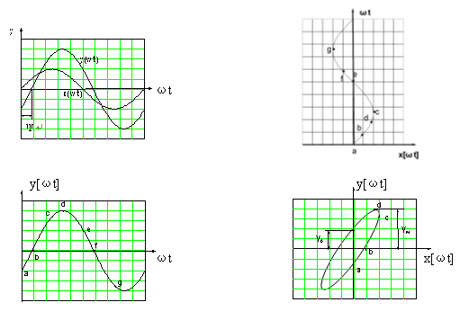

|
三、实验原理 1、幅频特性即测量输入与输出信号幅值A1及A2，然后计算其比值A2/A1。 2、实验采用“李沙育图形”法进行相频特性的测试。以下简单介绍一下这种测试方法的原理。 设有两个正弦信号: X(ωt)=XmSin(ωt) Y(ωt)=YmSin(ωt+ψ) 若以X(t)为横轴，Y(t)为纵轴，而以ω作为参变量，则随着 ωt的变化，X(t)和Y(t)所确定的点的轨迹，将在X-Y平面上描绘出一条封闭的曲线。这个图形就是物理学上称为的“李沙育图形”如图2-3所示。  3、相位差角Ψ的求法: 对于X(ωt)=XmSin(ωt)及Y(ωt)= YmSin(ωt+ψ)， 4、记录实验结果数据填写下表：
|
||||||||||||||||||||||||||||||||||||||||||||||||||||||||||||||||||||